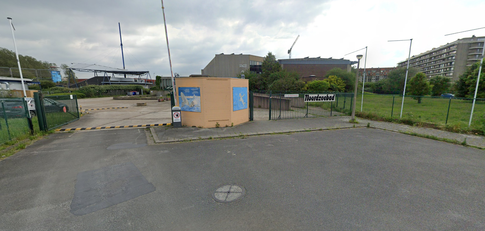

In Blankenberge is er vorig jaar een nieuw zwembad gebouwd waardoor het oude gebouw daar gewoon staat. Een paar vrienden van mij hadden al een paar keer ingebroken in het zwembad en hadden dan 1 van de terrasdeuren opengelaten waardoor het makkelijker was om er binnen te geraken.
Dus ik en mijn vrienden besloten om er eens samen in te gaan want eerst durfde ik niet. We zijn daar een beetje aan het rondlopen en ontdekken. We hadden een brandblusser open gedaan en mee gespeelt en in het zwembad gegooit, we zijn op het dak gaan lopen, ... .
Vroeger gingen we daar altijd zwemmen met school en er was daar altijd een ruimte die we altijd een keer wouden zien dus we besloten dat het nu de perfecte moment was.
We deden de deur open en een vriend keek en hij zei ik zie geen alarm en hij begint rond te lopen. Ik kijk binnen in die ruimte en ik zie een bewegingssensor en hij kipperde toen ik er naar toe keek.
Ik zeg tegen mijn vrienden dat er een alarm is en dat hij ons gezien heeft en net wanneer ik mijn zin maak gaat het alarm af. Wij rennen naar buiten en op onze fietsen en rijden naar een veilge plek.
Later hoor ik van een vriend (die niet mee was) dat zijn papa ons gezien heeft op de camera's dus ik was in paniek maar er is niks erna meer gebeurd dus ik denk dat we geluk hadden.

Noah Decoster
Inbreken in oud zwembad.
